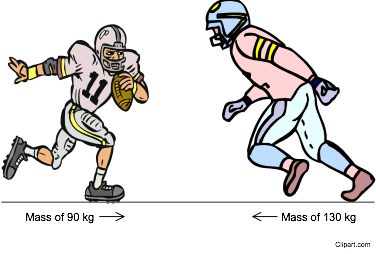

6. During a football game, a 90 kg player is running towards a 130 kg player.
They continue on their respective paths until they collide with one another.

Which of the following statements correctly describes
what occurs as a result of the impact?
A) The 90 kg
player will experience a greater acceleration as a result of the collision
because he has less mass.
B) The 130 kg
player will experience a greater acceleration as a result of the collision because
this player has a higher inertia.
C) The 130 kg
player will exert a greater force on the 90 kg player because he has a
greater mass.
D) The 90 kg
player will exert a greater force on the 130 kg player because this player
has a higher inertia.